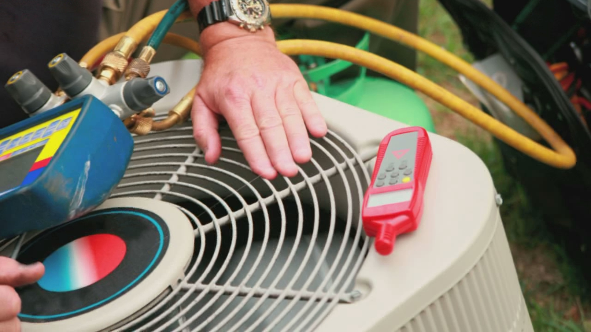

Residential Heating
Furnace and heat-pump repair, maintenance, installation and replacement guidance for Chesterfield homes.
Explore Heating Service →Chesterfield, Michigan HVAC Service
Frost & Kretsch provides residential and commercial HVAC repair, maintenance and installation in Chesterfield. Start with the service you need, then call the same local number for the next step.

Heating Repair & Service
Air-Conditioning Service
Commercial HVAC
Licensed & Insured
HVAC Services in Chesterfield
A city hub connects local customers to the complete service architecture. It does not duplicate every repair page or stuff the same city name into every paragraph.
Furnace and heat-pump repair, maintenance, installation and replacement guidance for Chesterfield homes.
Explore Heating Service →Cooling repair, seasonal maintenance and system planning for homes that are not staying comfortable.
Explore Air Conditioning →Heating and cooling service for owners, property managers and businesses that need clear coordination and dependable communication.
Explore Commercial HVAC →
Useful Local Content
The final Chesterfield page will combine the verified service mix with useful seasonal and property context. It will not claim another office, fabricate neighborhood expertise or repeat a generic county paragraph.
Local Service Process
The location page supports conversion and navigation. It helps customers describe the need, choose the relevant service and call without getting lost in a directory.
Heating, cooling, commercial, maintenance, installation or another verified HVAC service.
Use the same direct phone number throughout the site and describe what changed.
The actual equipment and building conditions guide the service recommendation.
Move from diagnosis to repair, maintenance or replacement planning as appropriate.
Residential & Commercial Coverage
Each block links to a substantial parent service page. That gives the city hub a useful role without competing against the dedicated service pages for the same search intent.
Nearby Macomb County Areas
Nearby communities appear only where they help customers navigate. Every city receives its own genuinely useful page and no city is presented as a separate Frost & Kretsch office.
Chesterfield HVAC Questions
The questions explain availability and service scope. They do not add fake landmarks, fabricated customer stories or unverified response guarantees.
Yes. Frost & Kretsch provides residential and commercial heating and cooling services in Chesterfield and throughout its Macomb County service area.
Yes. The site will provide direct paths for heating, air conditioning, heat pumps, commercial HVAC and other confirmed services while keeping one primary phone number.
Frost & Kretsch advertises 24/7 HVAC availability. Call (586) 929-8980 to explain the situation and confirm current response timing.
Yes. The commercial architecture includes heating, air conditioning, repair, planned maintenance, installation, replacement and rooftop-unit service.
Use the service links on this page to reach the appropriate heating, cooling, heat-pump, ductless or commercial page. Those pages contain the detailed symptoms, process and decision information.
From Location to Service
Chesterfield links to the core service hubs, nearby communities and useful HVAC answers. Those pages link back when the local context is genuinely relevant.
Speak directly with the team about residential or commercial heating and cooling service.